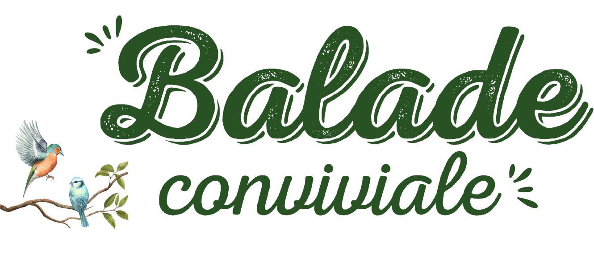
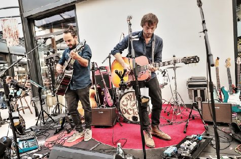
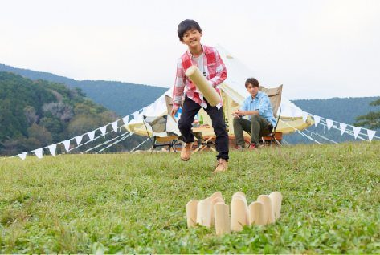

Balades ludiques
6 ou 11 km
5 € adulte · 3 € enfantGratuit - de 6 ans
ADMR de Côte-d'Or · samedi 26 septembre 2026

Salle des fêtes de Collonges-et-Premières
6 ou 11 km
5 € adulte · 3 € enfantStands & ateliers
Gratuit · 9h à 13hUn moment convivial
18 € adulte · 13 € enfantRock, folk, good vibes
À partir de 12h15En plein air
De 11h à 17h☕ 8h30 à 10h : café d'accueil
Réveillez vos sens au fil d'un parcours ludique avec des petits jeux, questions et énigmes à résoudre : paniers gourmands à gagner !
9h : départ pour la grande balade (11 km)
10h : départ pour la petite balade (6 km)
Café d'accueil + balade ludique + ravitaillement + apéritif
Sur inscription (jusqu'au 26/09) : 5 € adulte · 3 € (- de 16 ans) · gratuit (- de 6 ans)
Stands et ateliers ludiques autour de la nature et des 5 sens pour toute la famille.
Exposition de dessins, initiation à l'apiculture, démonstration de Tataki Zomé (impressions florales sur tissu), stand sur les « plantes comestibles sauvages », maquillages pour enfants et divers ateliers ludiques autour des 5 sens.
Animations gratuites et ouvertes à tous de 9h à 13h
Un repas pour se retrouver, échanger et partager un agréable moment ensemble ! Pour vous remercier de votre présence, l'ADMR a le plaisir de vous offrir l'apéritif.
Apéritif + paëlla royale + fromage + dessert (Genty traiteur)
Sur inscription (avant le 20/09) : 18 € adulte · 13 € (- de 16 ans) · gratuit (- de 6 ans)
Thom et Val forment un duo acoustique mélodieux qui revisite avec passion un répertoire mêlant reprises et compositions originales aux couleurs rock et folk des années 60 et 70. Leur univers s'inspire notamment de The Beatles, The Rolling Stones, Pink Floyd ou encore Neil Young.
Plus d'informations sur YouTube ↗
Concert gratuit et ouvert à tous à partir de 12h15

Une journée placée sous le signe de la bonne humeur ! Jeux, détente et rafraîchissements vous attendent pour un moment de plaisir et de convivialité. Venez vous amuser en plein air et profiter de la buvette dans une ambiance chaleureuse !
Jeux et buvette de 11h à 17h

Un évènement organisé par l'ADMR de Côte-d'Or et l'association ADMR de Genlis/Auxonne avec le soutien de l'association « Les Joyeux Godillots », les communes de Collonges et Première, Soirans et le conseil départemental de Côte d'Or.